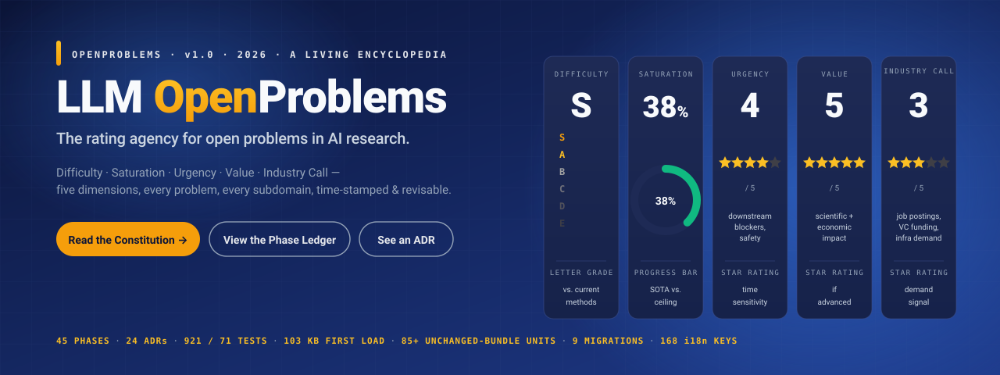
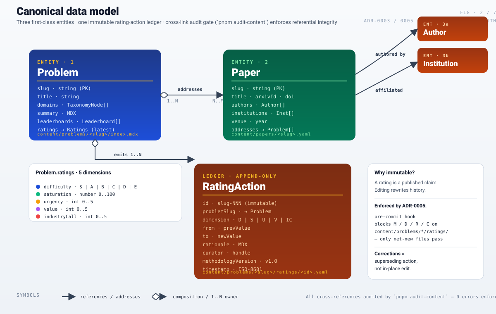
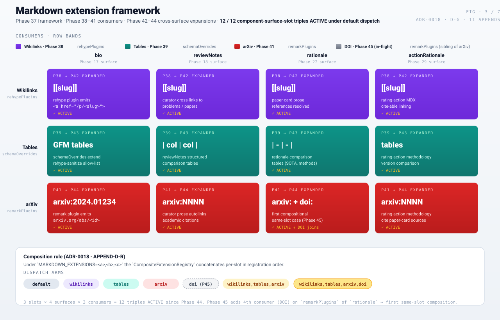
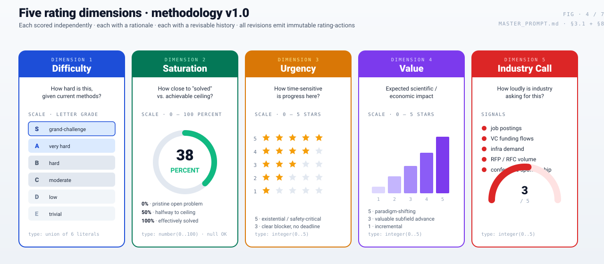
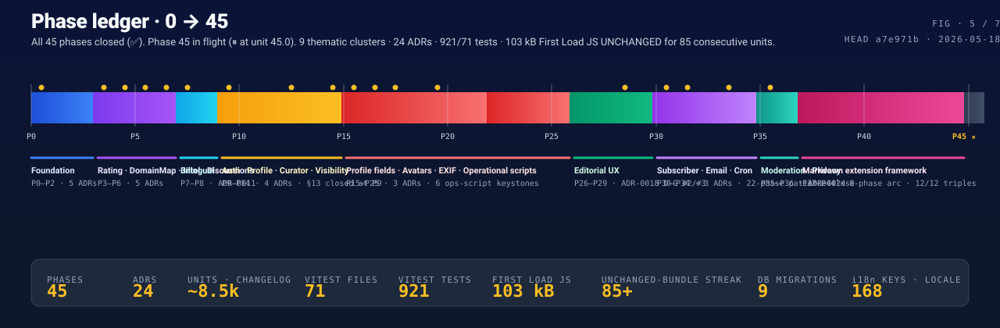
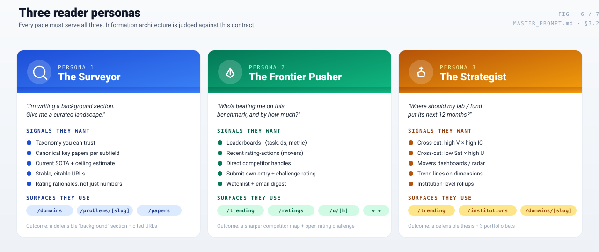
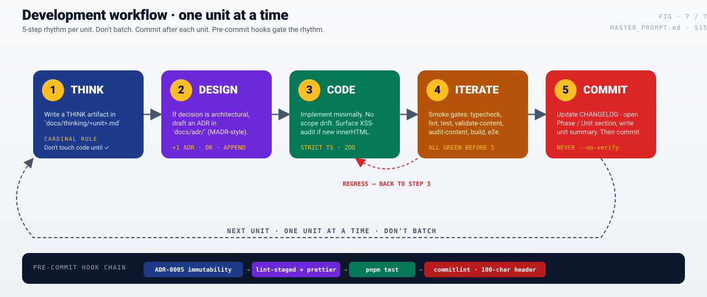

Hero · brand banner
One-glance product positioning: the rating-agency metaphor + 5 rating-dimension cards (Difficulty, Saturation, Urgency, Value, Industry Call) + a KPI strip across the bottom (45 phases · 24 ADRs · 921 / 71 tests · 103 kB First Load JS · 85+ unchanged-bundle units · 9 migrations · 168 i18n keys).

1 · System architecture
Five layers, top to bottom: Client UI (React / Tailwind / shadcn / D3) → App Router (Next.js 15 RSC, locale sub-paths, route handlers, Vercel Cron, middleware 160 kB) → lib/ (schemas, auth, markdown + extensions framework, moderation, email, storage, i18n) → Storage (content/ file-first, Turso libSQL, Vercel Blob) + External (GitHub/Google OAuth, Resend, Anthropic + arXiv).

2 · Canonical data model
Three first-class entities (Problem ↔ Paper ↔ Author + Institution) plus the immutable RatingAction ledger (id · problemSlug · dimension D/S/U/V/IC · from → to · rationale · curator · methodologyVersion · timestamp). Pre-commit hook ADR-0005 enforces append-only on content/problems/*/ratings/*.yaml — only net-new files pass.

3 · Markdown extension framework
The Phase 37–44 framework state — 3 consumers (Wikilinks → rehypePlugins, Tables → schemaOverrides, arXiv → remarkPlugins) × 4 surfaces (bio, reviewNotes, rationale, actionRationale) = 12 / 12 component-surface-slot triples ACTIVE under default dispatch. Phase 45 lands DOI as a sibling consumer in remarkPlugins → first compositional same-slot case.

4 · Five rating dimensions
Difficulty (letter grade S/A/B/C/D/E) · Saturation (0–100% donut) · Urgency (0–5 star bars) · Value (0–5 ascending histogram) · Industry Call (signals + half-gauge). Each independently scored, each with a rationale, each revisable. All revisions emit immutable rating-actions.

5 · Phase ledger 0 → 45
All 45 phases banded by thematic cluster (Foundation · Rating + Domain + Intel + Discussions · Bilingual · Auth + Profile + Curator · Profile fields + Avatars + EXIF + Op scripts · Editorial UX · Subscriber + Email + Cron · Moderation + Privacy · Markdown extension framework · pending) with 18 ADR markers as gold dots. KPI strip at the bottom.

6 · Three reader personas
The IA must serve all three on every page: Surveyor (lit-review student; wants taxonomy + canonical papers + SOTA + citable URLs) · Frontier Pusher (PhD / researcher; wants leaderboards + movers + competitor handles + rating-challenge + watchlist) · Strategist (PI / funder; wants V×IC cross-cut + low-Sat × high-U cross-cut + movers radar + trend lines + institution rollups).

7 · Development workflow
The 5-step THINK → DESIGN → CODE → ITERATE → COMMIT rhythm. One unit at a time. Don't batch. Commit after each unit. The pre-commit hook chain (ADR-0005 immutability → lint-staged + prettier → pnpm test → commitlint 100-char header) gates the rhythm. Never --no-verify.
